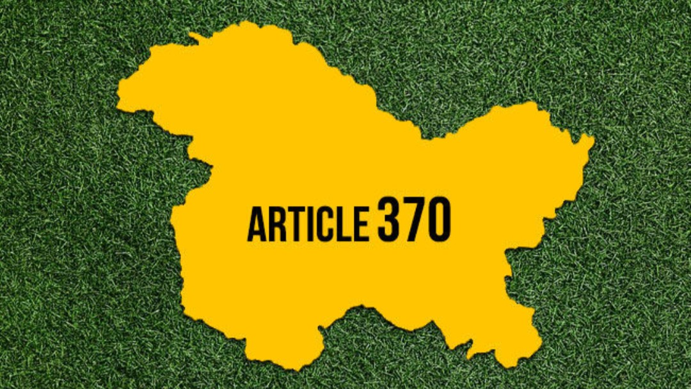

"Article 370 came into force in 1949, which gave the state of Jammu and Kashmir (J&K) a special status. The J&K citizens lived under separate laws and enjoyed democracy in all fields except for defense, international relations, banking, and communication. India is a 'secular' state means that the government does not support any particular religion. Each religion has the right to celebrate their festivals in whichever way they want but as we can all see in Jammu and Kashmir the government sometimes does not allow the Muslims to celebrate their festivals in peace. There are even serious human rights abuses such as rapes, torture, and detention, and so on. Article 370 was specifically meant to be a temporary clause inserted in the Constitution to fulfill the particular needs of the turbulent times immediately after the independence of India and the accession of the State to India. Article 370 has been diluted over the years by amendments for the purposes of unification, proper administration, and good governance. Nevertheless, amid these dilutions, Article 370 bore considerable symbolic and psychological significance to Kashmir’s.

On 5th August 2019, India's Union Home Minister, Amit Shah announced the repeal of Articles 370 and 35A of the Indian Constitution, which granted special status to the state of J&K. The territory is currently split into two parts- Jammu & Kashmir (with a legislature) and Ladakh (with no legislature). Before New Delhi's unilateral decision to revoke Article 370 and divide the J&K state into two union territories, all pro-India Kashmiri leaders were arrested. Thousands of security forces were sent in and an excessive and all-encompassing communications blackout was established in the Valley. The new administration has claimed the recent blunder had been rectified. It urged that Article 370 was required to be scrapped in order to incorporate Kashmir with the rest of the world. With this move the government aimed at restoring stability, curbing corruption, and facilitating development in the Valley.
It has been a year since the abrogation of article 370 has been enforced and this move of the government has crippled and devastated Kashmir’s economy. J&K's main economic industries have seen a steep downturn because of the internet blockade, curfews, and terrorist attacks. The economy in Kashmir has taken a devastating hit causing losses of more than 90,000 workers in the tourism, handicraft, and information technology industries in the past five months alone.
In this article, I will be focusing mainly on the tourism and apple orchard industry. In the tourism industry, After the Centre abolished its semi-autonomous status on August 5, 2019, tourist arrivals in Kashmir fell and this was followed by a communication breakdown. Tourism in Kashmir has fallen by 86 percent since the abrogation of Article 370. An example of this economic catastrophe can be understood with what happened in Jeelani’s Hotel. Just a day earlier than August 5, 2019, Jeelani’s hotel was nearly completely booked. Of its 88 rooms, sixty-three had been reserved. The day after the abrogation announcement, the bookings fell to a few and the number of bookings no longer rose past that quantity to date. Some days it no longer has a single guest. The apple industry in Kashmir is facing a major crisis. The lockdown following the abolition of last year's article 370 was a big disaster and then early snowfall that destroyed the apple orchards, and now the coronavirus lockdown that managed to break the supply chain and crippled the industry causing major losses for farmers and apple growers. The farmers suffered losses in crores. The fruit sellers in the Valley, who have been under full connectivity blackout and have been unable to reach traders in other states since the curbs were introduced, face the worst market seasons.
A significant portion of the general public and the opposition have received considerable backlash from this decision. Sadly the Kashmir valley was turned into a prison where people were living in misery because of the fear of having no identity, respect, personality, or freedom of speech and expression which is the fundamental right for a person. Jammu and Kashmir have recorded the most human rights abuses by the Indian security forces and Pakistani militants. J&K also being the first state to have the longest internet stoppage in any democracy from 4th August 2019 to 4th March 2020. According to the Kashmir chamber of commerce and industry after the abrogation of Article 370 the 10 districts in the valley of Kashmir incurred a loss of more than Rs.17878.18 crore. After staying below the figure for almost 30 months the unemployment rate also ruptured the 20% mark in august 2019. Therefore human rights and economic crises go hand in hand. Discontent can also be seen through mass demonstrations which have been held in different cities of India. It is therefore the call of the hour now, the government should take serious action to resolve the problems in Kashmir.